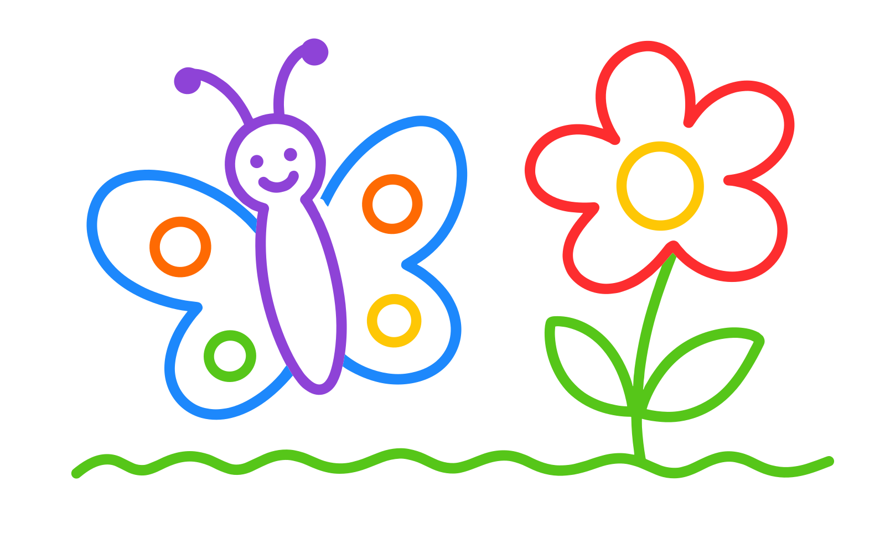
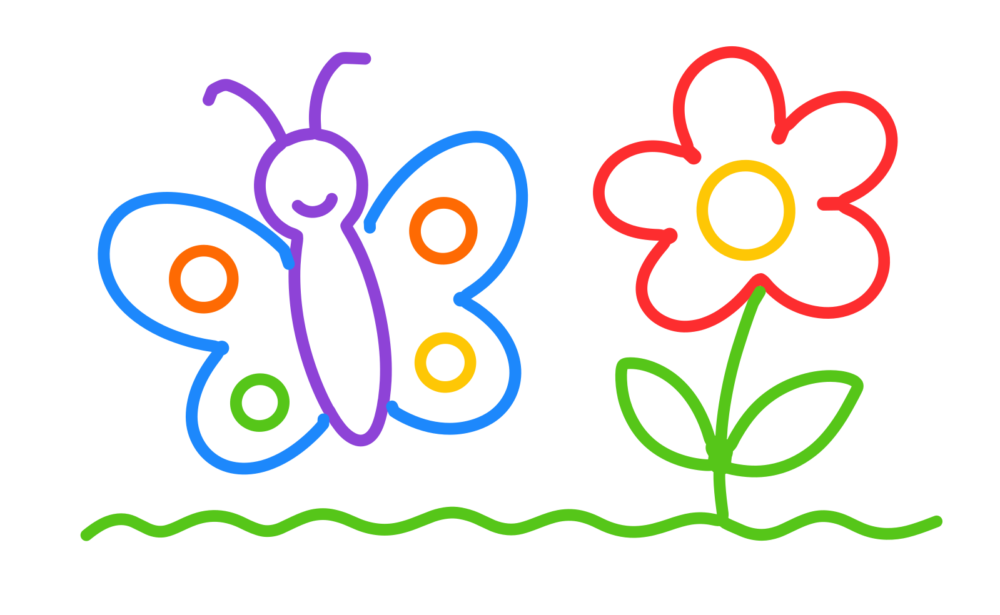
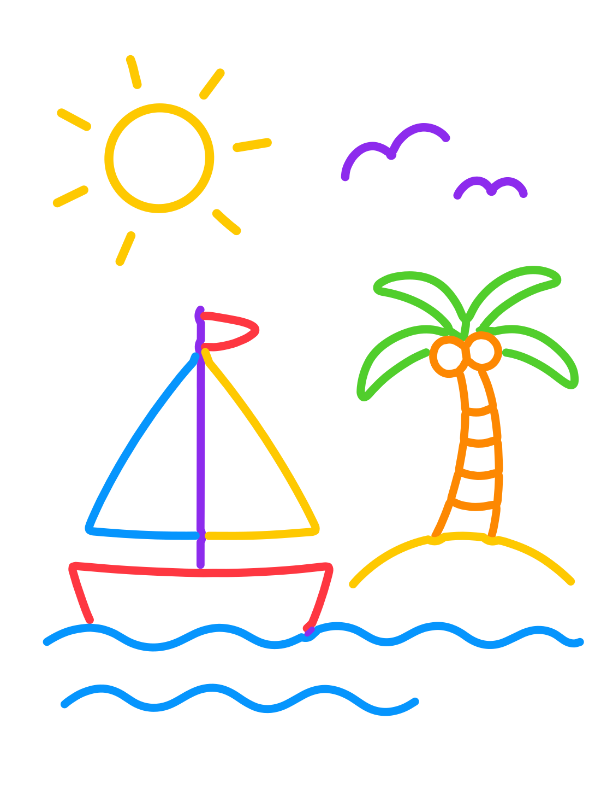
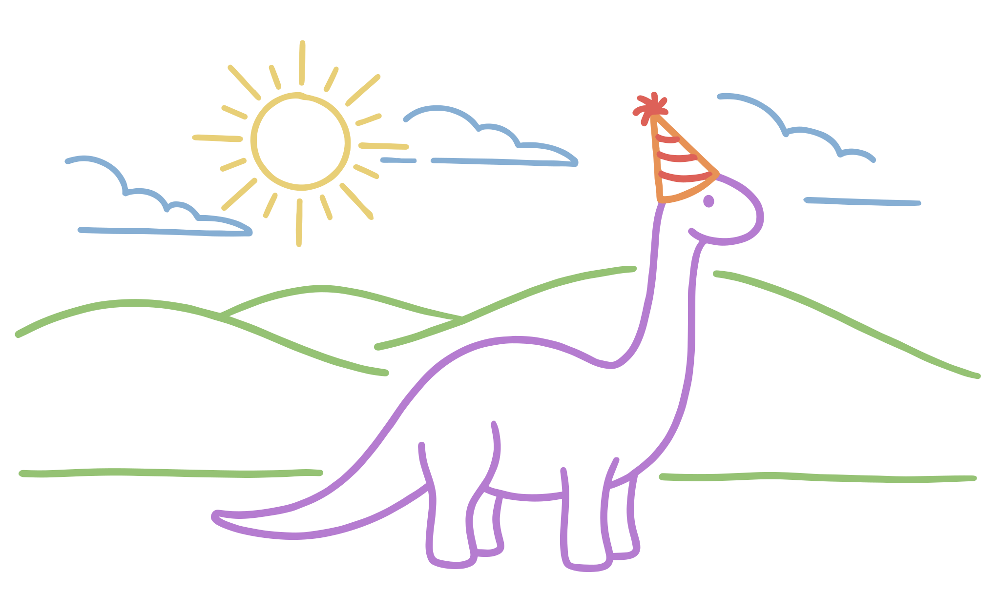
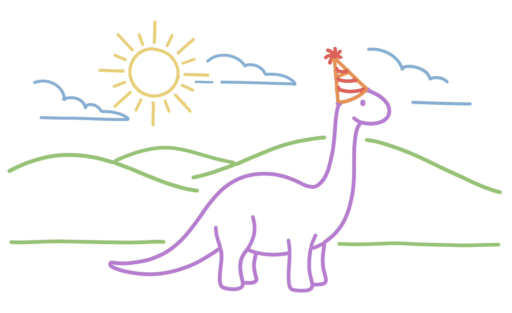

| case | input | output | diff | overlay | metrics |
|---|---|---|---|---|---|
| house-wide (SAT s=2) | compare.js 0.05% incumbent - IoU 0.9794 symdiff 2.08% boundary med 0.00 boundary P95 1.39 strokes 36 edges 277 beziers 277 total length 8540 width CV 0.082 MAT ms/elem 300 failed elems 0 | ||||
| butterfly-wide (SAT s=1.5) |  |  |
compare.js 0.12% incumbent - IoU 0.9707 symdiff 2.95% boundary med 0.00 boundary P95 1.33 strokes 33 edges 339 beziers 339 total length 9812 width CV 0.161 MAT ms/elem 375 failed elems 0 | ||
| boat-tall (SAT s=2) | compare.js 0.01% incumbent - IoU 0.9812 symdiff 1.89% boundary med 0.00 boundary P95 1.01 strokes 37 edges 357 beziers 357 total length 10220 width CV 0.081 MAT ms/elem 328 failed elems 0 | ||||
| island-tall (SAT s=2) |  |
compare.js 0.06% incumbent - IoU 0.9731 symdiff 2.71% boundary med 0.00 boundary P95 0.91 strokes 48 edges 434 beziers 434 total length 8857 width CV 0.122 MAT ms/elem 328 failed elems 0 | |||
| balloon-tall (SAT s=2) | compare.js 0.02% incumbent - IoU 0.9800 symdiff 2.02% boundary med 0.00 boundary P95 0.91 strokes 77 edges 414 beziers 414 total length 9839 width CV 0.151 MAT ms/elem 349 failed elems 0 | ||||
| home-wide (SAT s=1.1) | compare.js 0.02% incumbent - IoU 0.9730 symdiff 2.74% boundary med 0.00 boundary P95 1.28 strokes 85 edges 420 beziers 420 total length 7089 width CV 0.145 MAT ms/elem 285 failed elems 0 | ||||
| house-tall (SAT s=1.5) | compare.js 0.04% incumbent - IoU 0.9770 symdiff 2.32% boundary med 0.00 boundary P95 0.92 strokes 72 edges 621 beziers 621 total length 10532 width CV 0.103 MAT ms/elem 394 failed elems 0 | ||||
| dinosaur-wide (SAT s=1.5) |  |  |
compare.js 0.01% incumbent 0.02 IoU 0.9695 symdiff 3.10% boundary med 0.00 boundary P95 1.89 strokes 64 edges 463 beziers 463 total length 13988 width CV 0.135 MAT ms/elem 318 failed elems 0 | ||
| landscape-square (SAT s=1.1) | compare.js 0.15% incumbent 0.73 IoU 0.9620 symdiff 3.88% boundary med 0.00 boundary P95 2.09 strokes 199 edges 722 beziers 722 total length 27419 width CV 0.210 MAT ms/elem 724 failed elems 0 | ||||
| sun-square (SAT s=1.3) | compare.js 1.86% incumbent 4.2 IoU 0.9415 symdiff 6.05% boundary med 0.44 boundary P95 2.79 strokes 32 edges 273 beziers 273 total length 3696 width CV 0.183 MAT ms/elem 460 failed elems 0 |